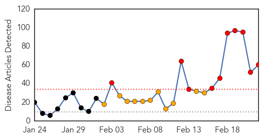

Ebola
30-Day Web Trend
0 alerts, 0 warnings

30-Day Twitter Trend
5 alerts, 3 warnings

Article Locations

Article Confidences

Top Articles:
- 1.000
- the edge of knowledge
- 1.000
- The most from the coast
- 0.999
- UN health agency approves rapid test for Ebola as decline in cases appears to level off
- 0.999
- MoD assesses threat of Ebola being used by ISIS or Al-Qaeda to attack Britain
- 0.998
- Region remains vigilant despite Ebola reducing in West Africa
- 0.998
- Liberia re-opens borders
- 0.998
- 60 Minutes’ Michael Usher from inside the Ebola danger zone
- 0.996
- In reaction to Ebola: Full list of travel bans imposed by various countries
- 0.990
- Rapid Ebola Detection Test Approved, Results In 15 Minutes
- 0.985
- Liberian president urges international community to support country as it moves past Ebola crisis
- 0.981
- AP Interview: Liberia leader urges help in post-Ebola phase
- 0.980
- Bill would allow car dealers to disclose issues
- 0.977
- LIBERIA: Ellen Lifts Curfew, Re-Opens Main Borders -But Concern Mounts For Ebola Penetration
- 0.976
- Obasanjo visits Ebola-hit countries, seeks support for victims
- 0.967
- Dead Que. man tests negative for Ebola
- 0.960
- Reuters Health News Summary
- 0.953
- AP Interview: Liberia leader urges help in post-Ebola phase
- 0.950
- Obasanjo Assures of additional support to End Ebola
- 0.948
- Top-secret military warning on Ebola biological weapon terror threat
- 0.936
- Birmingham naval officer helps contain deadly virus
- 0.934
- Ebola medics recount mission on edge of death
- 0.907
- Skokie-based mission in Liberia keeps children safe during Ebola outbreak
- 0.901
- Kailahun People Beg MSF To Stay
- 0.898
- Sen. Ted Cruz Slams Obama's Ebola Response
- 0.893
- Liberia lifts nationwide Ebola curfew as infection rates remain low
- 0.871
- UNDP Chief vows to stand with Sierra Leone
- 0.858
- UK ebola nurse Pauline Cafferkey probed over claims she hid illness
- 0.818
- Obasanjo confers with five African presidents
- 0.815
- Ebola terrorism threat assessed
- 0.692
- Scots Ebola nurse Pauline Cafferkey ‘faces probe’
- 0.590
- UK Ebola nurse under investigation after claims of misconduct
- 0.529
- Crowley helps combat Ebola by providing logistical support for “Operation United Assistance” mission in Africa
- 0.505
- A crisis in continental leadership
Top Tweets:
- 0.896
- World Health Organization Approves Quick Test for Ebola - Memphis Daily News http://t.co/AE8ZO4prTp ebola EVD
- 0.804
- Nurse Anne Carey fighting Ebola vows to continue the 'war' against deadly virus - Daily Mail http://t.co/obdvVrbYAO ebola EVD
- 0.801
- RT: SierraLeone orphanage quarantined after staff tested positive for Ebola. The staff at St George's orphanage had initiall…
- 0.685
- RT: Could these 2 titles from articles commenting on recent Ebola virus transmission review *be* any more different? http://t.c…
- 0.684
- We would like to help prepare for the Ebola Rapid Test Deployement by providing MobileBSL3 Labs to protect the healthworkers
- 0.632
- UK ebola nurse Pauline Cafferkey probed over claims she hid illness - Daily Mail http://t.co/jg02RbMIhJ ebola EVD
- 0.613
- Ape Expert Worried Urging Vaccination: Ebola Has Wiped Out A Third Of The ... - The Inquisitr http://t.co/dscX9ibCs6 ebola EVD
- 0.608
- Quebec man found dead at home may have had Ebola - CANOE http://t.co/gjEcrg8iy5 ebola EVD
- 0.608
- Quebec man found dead at home may have had Ebola - CANOE http://t.co/194fU7BzkJ ebola EVD
- 0.595
- But only in BS3L? UN health agency approves rapid test for Ebola as decline in cases appears to level off - Oximity https://t.co/XrrKbPbUSf
- 0.539
- We do need to destroy this variant of Ebola virus by isolating it in the last human cases in West Aftica http://t.co/Aq4Jb0V8Yp
Swine Flu
30-Day Web Trend
10 alerts, 11 warnings

30-Day Twitter Trend
0 alerts, 0 warnings

Article Locations

Article Confidences

Top Articles:
- 1.000
- Swine flu claims 38 more lives, death toll now 812
- 1.000
- Swine flu claims 38 more lives
- 1.000
- Swine flu claims 38 more lives, death toll crosses 800
- 1.000
- The New Indian Express
- 1.000
- H1N1 Swine flu claims 38 more lives, death toll crosses 800
- 1.000
- 31 more die, toll from swine flu rises to 774
- 0.999
- Haryana doctors at odds over swine flu
- 0.999
- Haryana doctors at odds over swine flu
- 0.999
- Haryana doctors at odds over swine flu
- 0.999
- Haryana doctors at odds over swine flu
- 0.999
- Haryana doctors at odds over swine flu
- 0.999
- Haryana doctors at odds over swine flu
- 0.999
- Haryana doctors at odds over swine flu
- 0.999
- Haryana doctors at odds over swine flu
- 0.999
- Haryana doctors at odds over swine flu
- 0.999
- Haryana doctors at odds over swine flu
- 0.999
- Haryana doctors at odds over swine flu
- 0.999
- Swine flu scare: Doctors warn against social media panic
- 0.999
- Swine flu cases swell despite rise in temperature in city
- 0.998
- Uttar Pradesh: Swine flu cases surge to 250
- 0.998
- Delhi hospital faces medicine shortage as doctors say children most at risk of H1N1
- 0.998
- Swine Flu H1N1: One more dies of swine flu in Kashmir, toll reaches 5
- 0.998
- 1 more swine flu death in Chhattisgarh, toll reaches 4
- 0.997
- Killer swine flu strikes India
- 0.997
- India makes key ingredient in 'world's most wanted' swine flu drug
- 0.996
- Child death takes swine flu toll in state to four
- 0.996
- H1N1 Swine flu: Vaccine 'dries up' in Kashmir, doctors at risk
- 0.995
- Read Health News & Articles at TheHealthSite.com
- 0.995
- Swine flu: Infants at higher risk at Sucheta Kriplani Hospital in Delhi : India, News
- 0.994
- Swine flu claims 774 deaths with 12,963 infections
- 0.994
- WhatsApp, Facebook new age weapons to ‘fight’ swine flu
- 0.993
- Swine flu return feared during monsoon months
- 0.992
- Private labs overcharging for swine flu tests issued notices
- 0.992
- Doctors tested positive for swine flu virus in Kashmir
- 0.991
- H1N1 Swine flu: Six cases in Jammu; doctors say not enough supply of medicines
- 0.990
- Swine flu claims seven more lives in Rajasthan, toll 212
- 0.987
- 5 new swine flu cases in Bengal
- 0.987
- Health Minister assures Nirmal on support for fighting Swine flu in J&K
- 0.987
- Swine Flu Kills 10 More in Gujarat; Toll Reaches 207
- 0.986
- Swine flu surge: 38 test +ve in a day
- 0.985
- Nine IPS trainees at NPA test positive for swine flu
- 0.984
- H1N1 cases surge past 3,000-mark in Gujarat
- 0.983
- Assembly Speaker, IAS officer down with swine flu – THE SEN TIMES
- 0.979
- Congress workers distribute medicines to combat swine flu in Gujarat
- 0.978
- Gujarat: Congress workers distribute medicines to combat swine flu
- 0.976
- Gujarat: Congress workers distribute medicines to combat swine flu
- 0.971
- After weeks of ‘widespread’ flu, New Hampshire officials urging vigilance on healthy habits
- 0.970
- AAP Delhi government had fixed the swine flu test price at Rs. 4500
- 0.962
- Suspected H1N1 Victim Dies of Heart Attack
- 0.952
- Congress workers distribute free masks, medicines to combat swine flu
Showing top 50 articles...
Top Tweets:
-
No tweets found for Feb 22, 2015